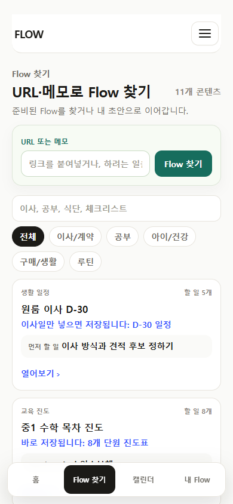
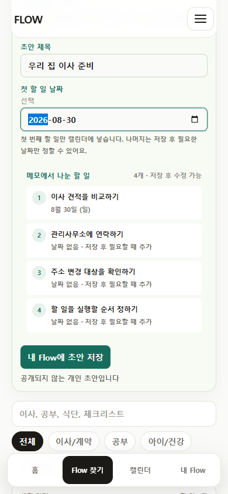
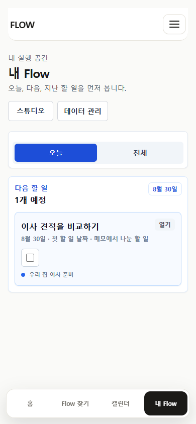
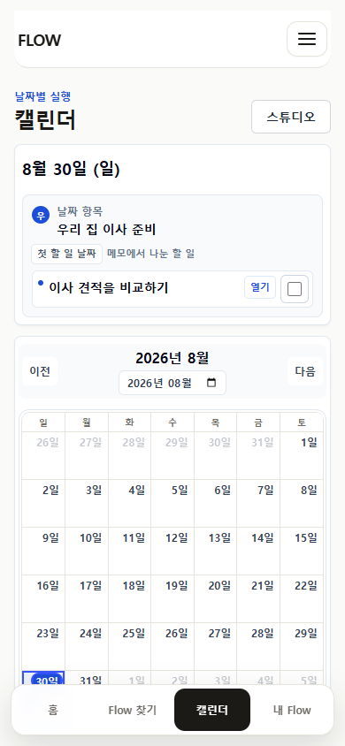
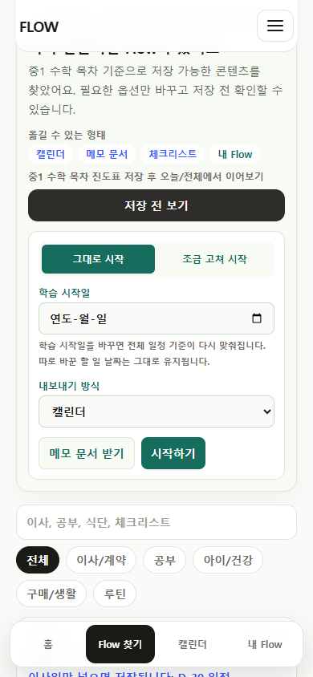
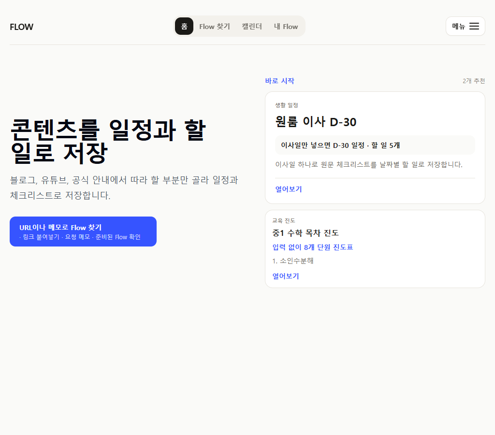
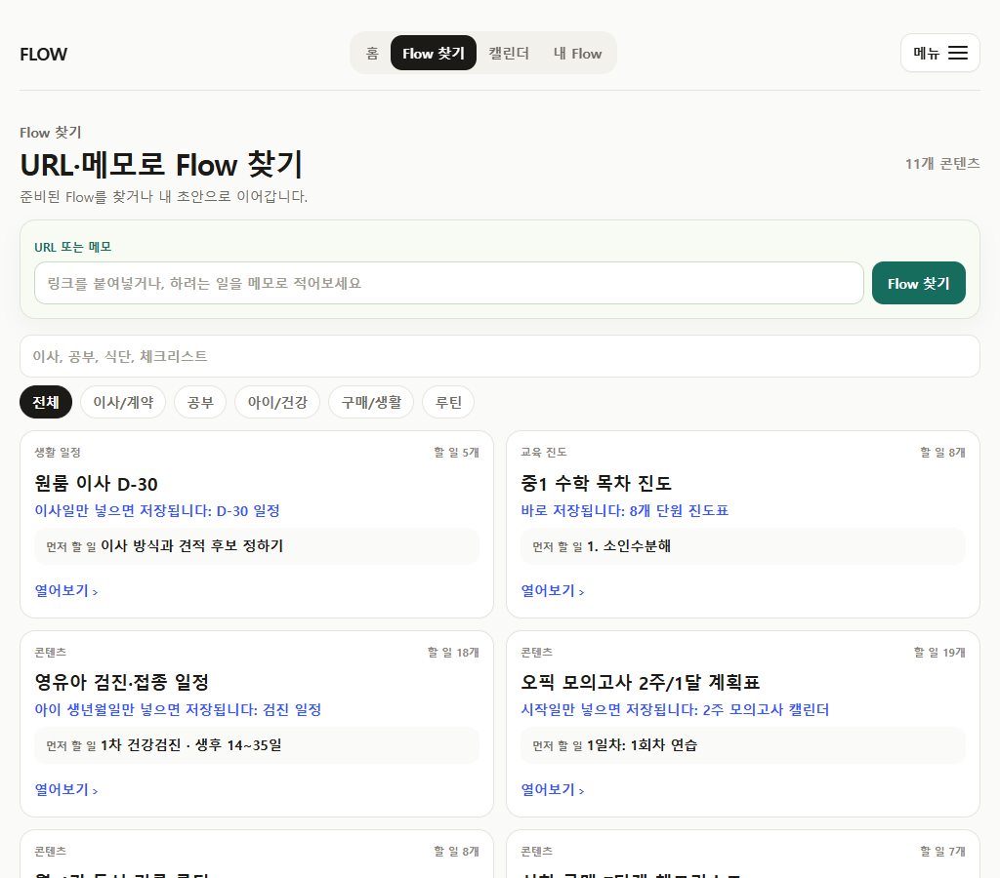
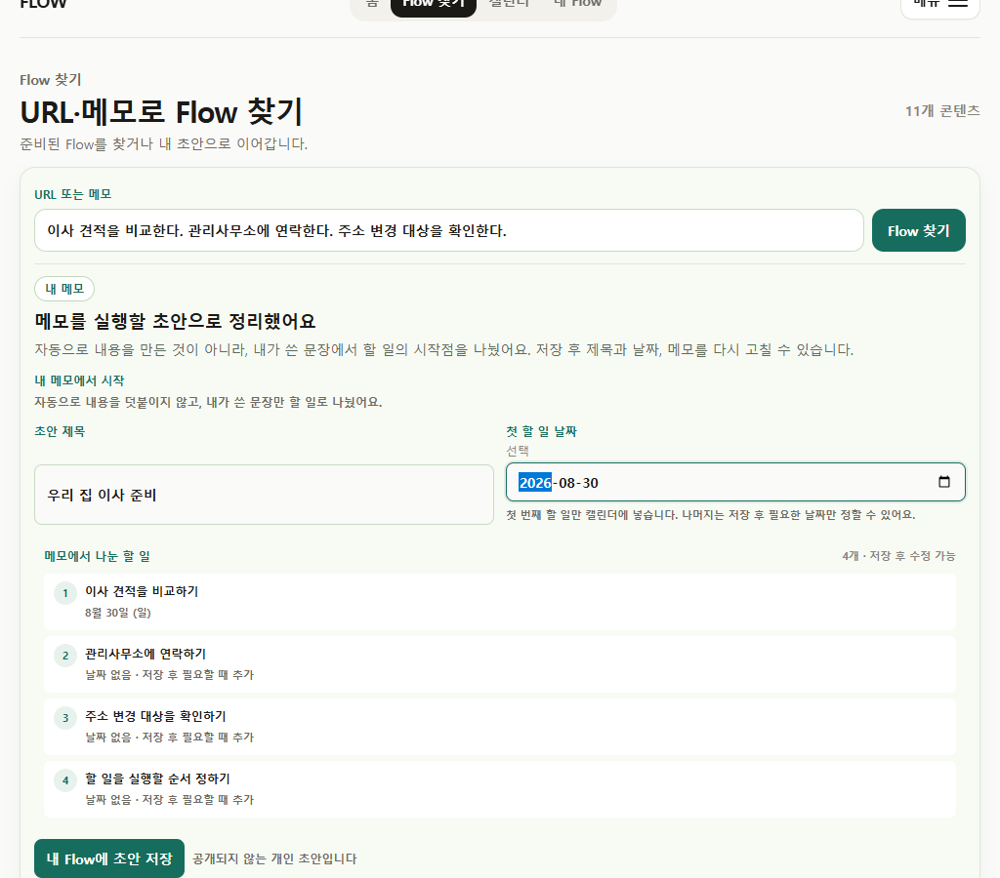
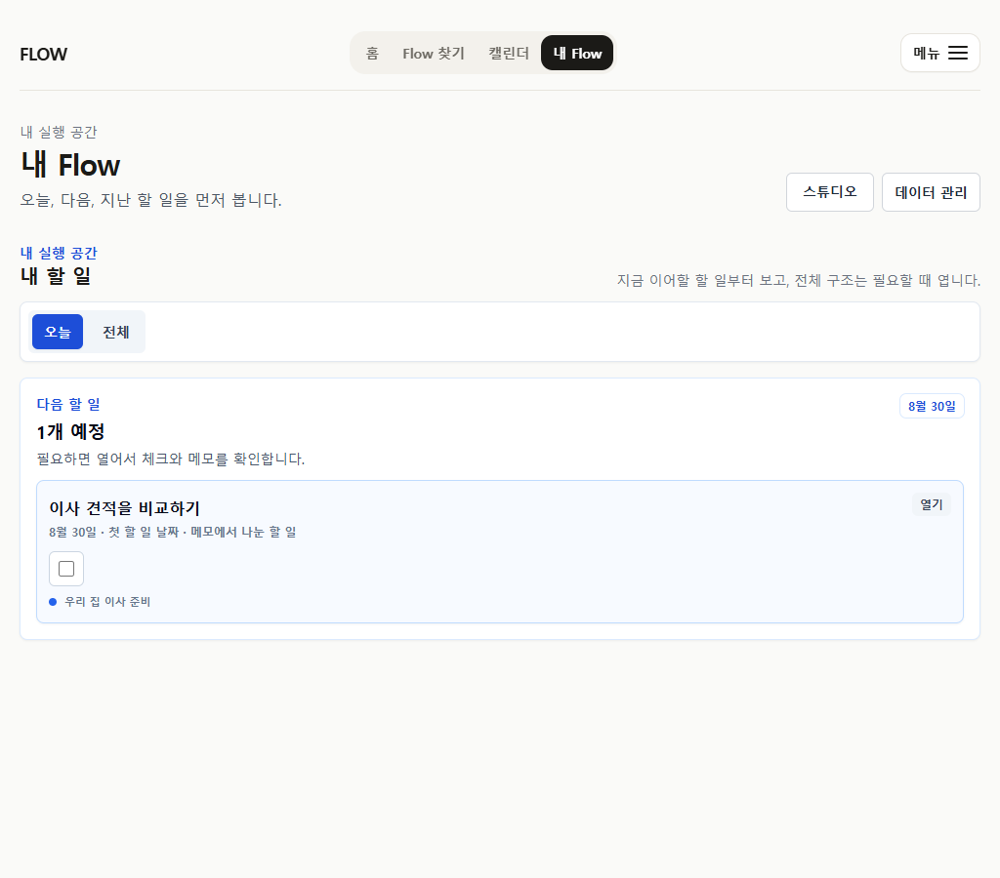
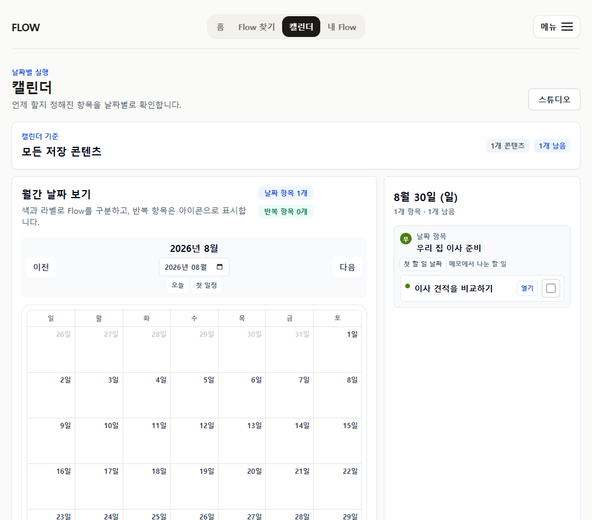

2026-07-12 · current production build
URL과 메모가 같은 첫 진입에서 실제로 작동하는가
오래된 리뷰 화면을 현재 근거로 사용하지 않고, 현행 / → /flows → /my → /calendar 경로를 390px와 1024px에서 다시 캡처했다.
2/2viewport entry visible
2/2memo draft saved
1scheduled item per memo
0invented sequential dates
0internal term hits
0live AI implications
0horizontal overflow
판단
홈의 “URL이나 메모” 약속과 `/flows` 런타임이 일치한다. URL은 기존 canonical lookup을 유지하고, 메모는 사용자가 쓴 문장만 나눈 개인 초안으로 저장된다. 선택 날짜는 첫 항목에만 적용하고 나머지는 날짜 없는 할 일로 남겨, 사용자가 쓰지 않은 연속 일정을 만들지 않는다.
모바일 390px






Wide 1024px




